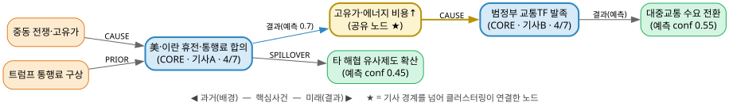

뉴스 기반 인과관계 분석 — 거시경제 모델용 · 2026-06-17 · 기획팀·개발팀 공동
뉴스 수집 → 중복제거 → 이벤트 추출(LLM) → 클러스터링 → 인과 그래프 → 지수화 → 거시모델
(BIGKinds) (SHA256+ (Step A/B/C/D) (3단계 필터) (Track A/B) (Granger 검증)
BGE-M3)
| 단계 | 하는 일 |
|---|---|
| 1. 수집·중복제거 | 기사 수집 → SHA256(동일) + BGE-M3 임베딩(유사) 클러스터링, cluster_uuid 관리 |
| 2. 이벤트 추출 | LLM 4-step: A Core → B Background → C Consequence → D Quality Critic |
| 3. 클러스터링 | 추출된 이벤트를 임베딩 유사도로 동일 계열끼리 묶음 (기사 경계 너머 연결) |
| 4. 인과 그래프 | 시간방향 강제 → 가중치(선행성×유사도×보도빈도) → LLM+PCMCI 이중검증 |
| 5. 지수화 | Track A(보도강도) / Track B(eigenvector centrality 변화량) → 일별 지수 |
| 6. 검증 루프 | Granger 인과검정 + lead-lag 구조 → 역방향으로 스펙 재조정 |
근거 논문: Tilly & Livan (UCL), 2021, Macroeconomic forecasting with statistically validated knowledge graphs, arXiv:2104.10457.
입력 기사 3건: ① 호르무즈 통행료(한국경제) ② 같은 호르무즈 보도(타 언론사) ③ 범정부 교통TF 발족(연합뉴스)
| 단계 | 이 예시에서 일어나는 일 |
|---|---|
| ① 중복제거 | SHA256은 ①②를 못 거름(문구 다름) → BGE-M3 유사도 0.93으로 같은 cluster_uuid. 대표 1건만 추출(비용↓) + "2개사 보도" 기록 |
| ② 추출 | 기사마다 작은 미니그래프(배경→Core→결과) 생성. 아직 서로 끊김 |
| ③ 클러스터링 ★ | 기사①의 결과 "고유가" ↔ 기사③의 배경 "중동발 고유가" → 같은 노드로 연결 |
| ④ 그래프 | 끊긴 미니그래프들이 ③으로 이어져 아래 인과 사슬 완성 |
| ⑤ 지수화 | "고유가" 노드가 여러 사슬의 허브 → centrality 높음 → 그날 지수에 크게 기여 |
| ⑥ 검증 | 이 지수가 실제 ECOS 에너지·물가 통계에 선행하는지 Granger 검정 |

| 단계 | 무엇을 묶나 | 왜 |
|---|---|---|
| ① 기사 중복제거 | 같은 사건 기사들 | 중복 기사를 1건으로 → 추출 비용 절감 + 보도 강도 정확 측정 |
| ③ 이벤트 클러스터링 | 다른 기사의 같은 이벤트 | 아래 3가지 (핵심) |
맞다 — 다만 정확히는 "얇은 온톨로지 층을 가진 이벤트 지식그래프(event knowledge graph)"다. 이 구분이 설계에 중요하다.
| 층 | 온톨로지? | 이 프로젝트에서 |
|---|---|---|
| 클래스/타입 | ✅ | event_type enum, entities(organizations/persons…) = 분류체계 |
| 관계 타입 | ✅ | relation_to_core(CAUSE…), consequence_type = object property |
| 스키마 | ✅ | event_schema.json = 경량 온톨로지(클래스+속성 정의) |
| 인과 엣지(사실) | ❌ | "4/7 이 휴전이 → 이 고유가를" = 인스턴스 레벨 · 시점 있음 · 확률적(weight·PCMCI) |
핵심 차이. 전통 온톨로지(OWL/RDF)는 타입 레벨·시간 무관·논리적으로 확실한 관계를 다룬다. 이 프로젝트의 인과 엣지는 토큰 레벨·시점 있음·통계적으로 검증되는 주장이다. → 스키마 층은 온톨로지, 인과 층은 경험적 그래프.
한국 기사는 대부분 저작권 보호 대상(단순 사실전달만 예외). 임의 크롤링 대신 라이선스된 소스를 쓴다.
| 경로 | 본문 | 비용 | 비고 |
|---|---|---|---|
| BIGKinds(한국언론진흥재단) | ○ | 유상(정황) | 공공·연구기관용 정식 경로. 1순위 |
| 연합뉴스 직접 데이터계약 | ○ | 유상 | 기관 직접계약 용이 |
| 공공데이터포털 KPF 데이터셋 | ✕(메타) | 무료 | 보조용 |
| GDELT | △ | 무료 | 글로벌 이슈·baseline·교차검증 |
REALIZED_AS 엣지(권장, lead-lag 추적 유리).bistro-news/ ├── README.md 프로젝트 개요·협업 가이드 ├── CLAUDE.md 파이프라인 상세 스펙 (단일 소스 오브 트루스) ├── schemas/event_schema.json 이벤트 출력 계약(JSON Schema) ├── prompts/ 이벤트 추출 프롬프트 (기획팀 주 작업 영역) └── docs/ 요약·온보딩·회의 자료
prompts/, 변경 이유를 커밋 메시지에.schemas/event_schema.json을 먼저 합의 후 수정.main 직접 푸시 대신 기능 브랜치 + PR 권장.BISTRO-News · github.com/shezgone/bistro-news · 본 문서는 docs/onboarding.html에서 생성됨